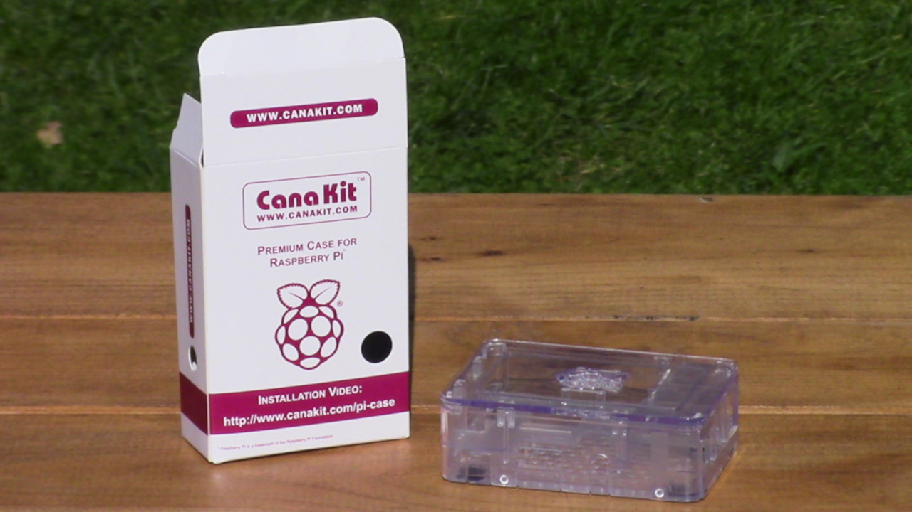

Raspberry Pi Server Hardware Setup
The Raspberry Pi is quite an amazing device considering its size, price, and functionality. I am using a Raspberry Pi 3 Model B, which has been out of date for some time, but it is sufficient for my needs.
Here are the Raspberry Pi 3's specifications.
- Quad Core 1.2GHz Broadcom BCM2837 64bit CPU
- 1GB RAM
- BCM43438 wireless LAN and Bluetooth Low Energy (BLE) on board
- 10/100 Ethernet
- 40-pin extended GPIO
- 4 USB 2 ports
- 4 Pole stereo output and composite video port
- Full size HDMI
- CSI camera port for connecting a Raspberry Pi camera
- DSI display port for connecting a Raspberry Pi touchscreen display
- Micro SD slot for storing operating system and storing data
The Raspberry Pi 3 receives its power via a micro USB port. I will use a power supply that supplies 5V at 2.5A to power it. I will connect that power supply to the Raspberry Pi via a USB cable that has an on/off switch so that I can leave the Pi plugged in to power and start it whenever I need to use it.
I am using a case from canakit to keep the Pi safe.
It comes in three parts and leaves all of the ports accessible.
Here is the Raspberry Pi, power supply, and case together.
Here is the Raspberry Pi in its case.

I know that this article did not contain very much useful information, but there were only a few noteworthy details to mention concerning this hardware. The next article will show how to install Raspberry Pi OS on a headless Raspberry Pi.
Next Article—Operating System Install
Published October 29, 2020